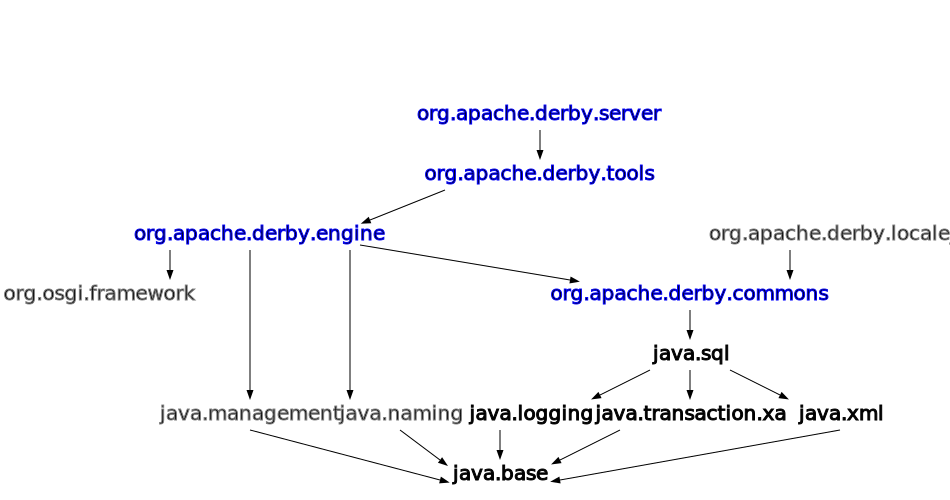

Module org.apache.derby.server
module org.apache.derby.server
This module corresponds to derbynet.jar.
The Derby network server wraps the engine in a DRDA protocol driver. In this configuration, clients on remote machines can access Derby databases. The optional engine modules can be added to this configuration to provide their extra functionality.
Module Diagram:

-
Packages
PackageExported To ModulesOpened To ModulesDescriptionAll ModulesAll ModulesAll ModulesNoneThis package contains JMX MBeans that are intended to provide monitoring and management capabilities of the Derby Network Server.